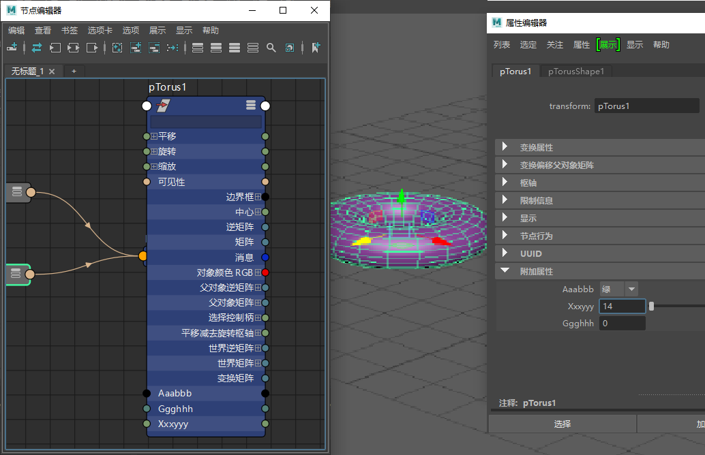
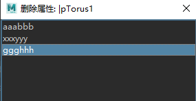

将自定义属性添加到对象中
- 选择想要添加属性的对象或节点。
- 在“属性编辑器”(Attribute Editor)中，选择“属性 > 添加属性”(Attributes > Add Attributes)或从主菜单栏选择“修改 > 添加属性”(Modify > Add Attribute)。
- 输入属性的“长名称”(Long name)。
- （可选）启用“覆盖易读名称”(Override Nice Name)并为属性添加非默认易读名称。
默认情况下，Maya 会创建一个易读名称，即在包含大小写的文本 (testAttribute) 中的大小写之间插入空格 (Test Attribute)。通过设置您自己的易读名称可获得更强的灵活性，例如，用本地语言（日语）创建属性的易读名称。
- 设置“可设定关键帧”(Keyable)选项。
如果属性可设定关键帧，则可以在关键帧动画中使用其值，并且它会出现在“通道盒”(Channel Box)中。也可以选择“可显示”(Displayable)（出现在“通道盒”(Channel Box)中，但不可设定关键帧）或“都不是”(Neither)（隐藏）。
- 选择属性包含的值类型：
- 单击“添加”(Add)。
这会将属性添加到选定节点。（该节点不一定是“属性编辑器”(Attribute Editor)中当前显示的节点。）
选择对象上的自定义属性
- 在“视口”(Viewport)、“属性编辑器”(Attribute Editor)或“节点编辑器”(Node Editor)中选择具有自定义属性的对象。在节点图表中，自定义属性显示在节点末尾；在“属性编辑器”(Attribute Editor)中，自定义属性显示在附加属性中。

“节点编辑器”(Node Editor)和“属性编辑器”(Attribute Editor)中的圆环形状及其自定义属性
编辑自定义属性
- 选择具有要编辑的自定义属性的对象/节点。
- 选择“修改 > 编辑属性”(Modify > Edit Attribute)或在“属性编辑器”(Attribute Editor)中选择“属性 > 编辑属性”(Attributes > Edit Attributes)。
- 单击要编辑的属性名称。
在属性名称中，除下划线 (_) 和井号 (#) 以外的所有标点都是非法字符。
删除自定义属性
- 选择具有要删除的属性的对象/节点。
- 在“属性编辑器”(Attribute Editor)菜单栏中，选择。将显示“删除属性”(Delete Attributes)窗口。

- 单击属性的名称，然后单击“删除”(Delete)。